Every frame is the separated PNG layers posed by the 41-bone rig (idle, blink, eye directions, brow raise, lip-sync, smile, laugh, wave, point, walk, run, jump, landing squash & stretch, sit, reset).
29.1s at 16 fps · GIF (no video encoder in this build environment).
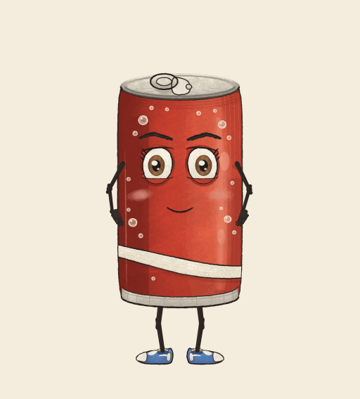
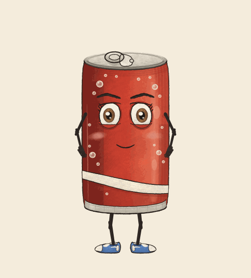
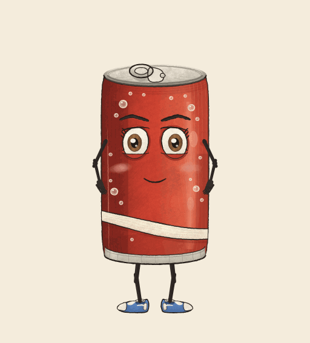
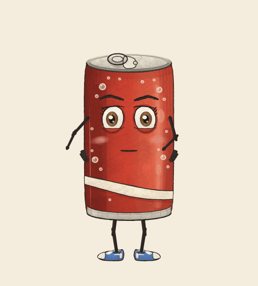
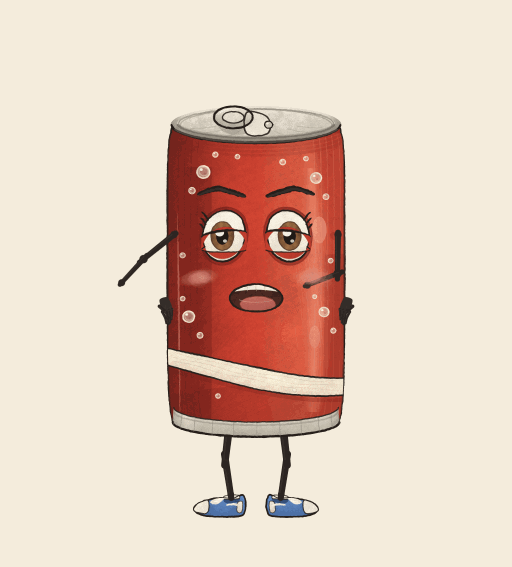
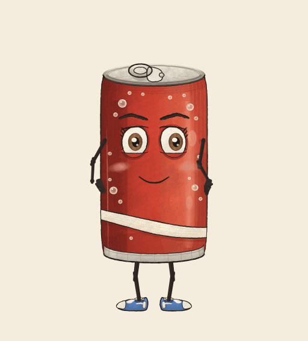
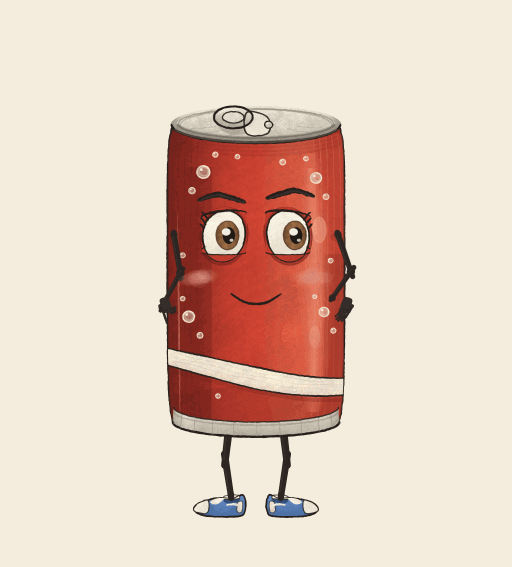
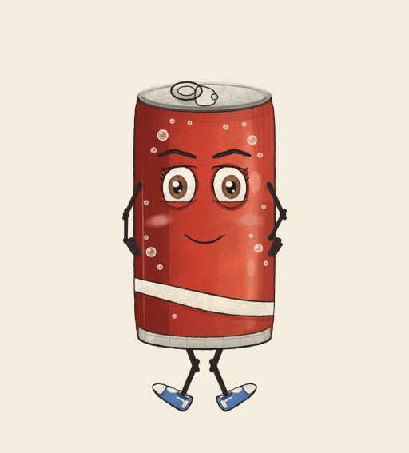
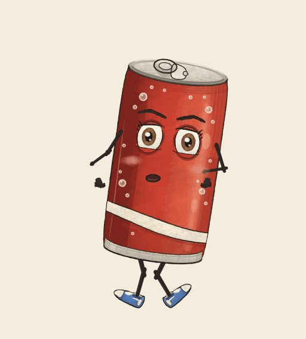
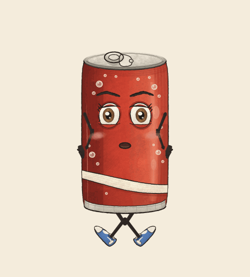
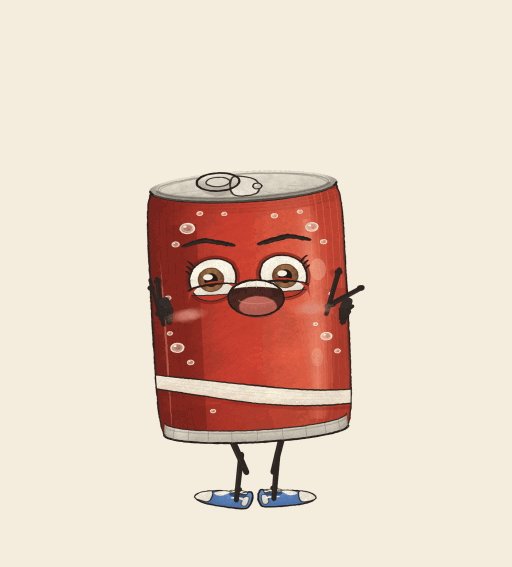
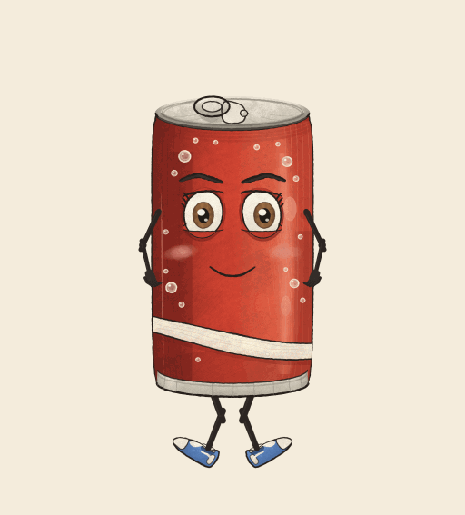
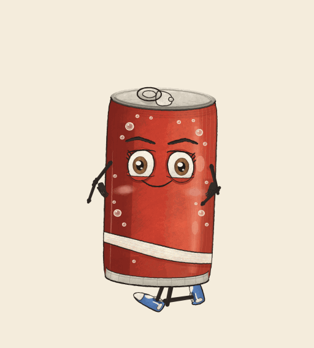